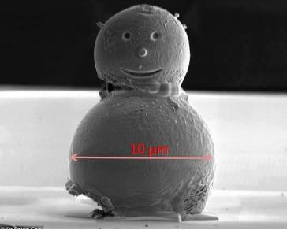

Hvordan karakterisere nanoteknologi?
Siden nanoteknologi er så utrolig lite trenger det menneskelige øye hjelp for å kunne arbeide med materialer som er fra 1-100 nanometer. I takt med utviklingen av nanoteknologi har også redskap for å jobbe med slike materialer hatt en enorm utvikling. For å karakterisere ulike egenskaper som mikrostruktur, krystallstruktur og komposisjon blir ulike teknikker brukt. Videre følger en beskrivelse av de viktige metodene for karakterisering av nanoteknologi.
SEM
SEM står for Scanning Electron Microscopy og bruker elektroner istedenfor lys som kilde. Lys har en bølgelengde på flere tusen Å(10-10) og har derfor en begrensing på oppløsning. Ved å bruke akselererte elektroner med bølgelengde på 0,7Å blir oppløsningen mye bedre og blir anvendelig også for nanomaterialer. SEM funker ved at arealet som skal bli undersøkt blir sveipet over med en tynn elektronstråle. Dette gir opphav i ulike signaler som blir sendt til en detektor for karakterisering. De mest brukte er tilbakespredte elektroner, sekundærelektroner og røntgen. Det er veldig god dybdeskarphet på SEM og derfor virker SEM tredimensjonalt noe som gir kule bilder. Det finnes mange typer av elektronmikroskop, alle med forkortelser STEM, TEM, EPMA. De har litt ulike bruksområder og kostnad, og for karakterisering og manipulering er det ofte viktig å kombinere de ulike mikroskopene.
FIB
FIB er en forkortelse for Focused Ion Beam og kombinerer egenskaper lignende til SEM med et presisjonsbearbeidingsverktøy. Det var utviklet først med tanke for bruk innen semikonduktor (innenfor solceller), men har vist seg å ha flere bruksområder. FIB bruker ioner istedenfor elektroner for å penetrere materialer. På grunn av at ioner har kortere bølgelengde enn elektroner blir det høyere oppløsning og på grunn av høyere vekt kan ioner penetrere hardere materialer. FIB fungerer ved at systemet produserer og leder en strøm av ioner med høy energi av et ganske tungt element i det periodiske systemet. De tunge ionene kan på grunn av sin relative høye masse få overflateatomene ut fra sin posisjon og skaper derfor sekundærelektroner som blir avbildet. I dagens FIB er det mest vanlig å bruke Galium og bruke deres Ga+ ioner. På grunn av den store størrelsen på ionene har FIB store fordeler i forhold til andre mikroskoper. FIB kan faktisk lage nesten alle typer mikrostrukturer og kan isolere små regioner på prøven og bare lage modifikasjoner der uten å påvirke resten av prøven. På den andre siden har FIB noen ulemper, og kan lage uønsket skade på prøven. Derfor kombineres ofte FIB med SEM for å utnytte egenskapene til de to ulike systemene.
TEM
TEM står for Transmission Electron Microscope og bruker også elektroner istedenfor lys. I TEM brukes det elektromagnetiske linser for å lage en tynn, fokusert stråle. Denne strålen blir sendt gjennom prøven og treffer til slutt en fluoressense-skjerm. For at strålen skal komme gjennom prøven kreves det at prøven er veldig tynn, mindre enn 100 nanometer. Ellers blir alle elektronene bare spredt tilbake og det vil ikke bli laget et bilde av materialet. To andre utfordringer til TEM er at det må være vakuum og det er begrenset med plass.
SPM
SPM står for scanning probe microscopy og er mikroskopi metoder som danner bilder av overflaten ved å fysisk scanne prøven med en probe/sonde. Dette kan brukes til å undersøke lokal elektronkonfigurasjon og overflateegenskaper ned til nanostørrelse. I tillegg er det mulig med SPM å nøyaktig manipulere overflater ned til nanoskala. Videre følger en kort beskrivelse av en type SPM, AFM. Det finnes mange flere og alle har forkortelser; STM, MFM, SKPFM, SECPFM
AFM
AFM står for Atomic Force Microscopy og prinsippet her er nettopp kraft. Den scanner hele overflaten med hjelp av en probe som består av "cantilever" og en utrolig tynn tupp. Tuppen skal fortrinnsvis være så tynn at det bare er et atom helt ytterst! Det som blir detektert er kraften mellom tuppen og overflaten. Altså lager ikke AFM et bilde av overflaten, men analyserer interaksjonen mellom overflaten og den tynne tuppen.